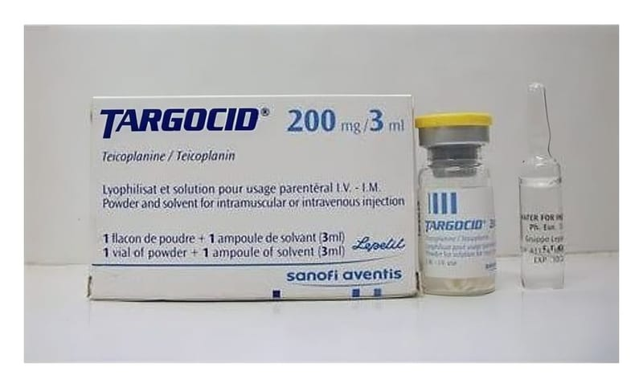

Targocid 200 mg/3 ml IM/IV Enjeksiyonluk Çözelti İçin Toz Ve Çözücü, 1 Adet

Ne için kullanılır
KT · Bölüm 1• TARGOCİD, kuru toz halinde teikoplanin isimli bir ilaç içerir. • TARGOCİD, bakterilerin neden olduğu enfeksiyonların tedavisinde kullanılan bir antibiyotiktir. Bu enfeksiyonlar eklemlerinizde, kanınızda veya kemiklerinizde meydana gelebilir. TARGOCİD damar içine veya kas içine enjekte edilerek kullanılır. • Etkin maddenin kuru toz halinde yer aldığı 1 enjeksiyonluk flakon ve 3 mL enjeksiyonluk su içeren ampul aynı ambalaj içinde sunulmuştur. Her bir çözücü ampul içinde 3 mL enjeksiyonluk su bulunur. Her bir TARGOCİD Enjektabl Flakonu içinde 24 mg sodyum klorür bulunur. 2 dozaj şekli mevcuttur: TARGOCİD 200 mg/3 mL IM/IV enjeksiyonluk çözelti için toz ve çözücü ve TARGOCİD 400 mg/3 mL IM/IV enjeksiyonluk çözelti için toz ve çözücü. • TARGOCİD yetişkinlerde ve çocuklarda (yeni doğan bebekler dahil) vücüdun aşağıdaki bölümlerinde meydana gelen bakteriyel enfeksiyonların tedavisinde kullanılır: − deri ve deri altı doku –(bazen 'yumuşak doku' da denebilir.) − eklem ve kemikler − akciğer − idrar yolları − kalp − endokardit olarak adlandırılan kalbin iç zarının veya kapakçıklarının iltihabı Bu ilacı kullanmaya başlamadan önce bu KULLANMA TALİMATINI dikkatlice okuyunuz, çünkü sizin için önemli bilgiler içermektedir.
•Bu kullanma talimatını saklayınız. Daha sonra tekrar okumaya ihtiyaç duyabilirsiniz. •Eğer ilave sorularınız olursa, lütfen doktorunuza veya eczacınıza danışınız. •Bu ilaç kişisel olarak sizin için reçete edilmiştir, başkalarına vermeyiniz. •Bu ilacın kullanımı sırasında, doktora veya hastaneye gittiğinizde doktorunuza bu ilacı kullandığınızı söyleyiniz. •Bu talimatta yazılanlara aynen uyunuz. İlaç hakkında size önerilen dozun dışında yüksek veya düşük doz kullanmayınız.
− mide veya bağırsak: Hastalık peritonit olarak adlandırılır. Bu durum eğer böbrek problemleriniz varsa ve düzenli olarak diyalize giriyorsanız gerçekleşebilir. − kan yukarıda listelenen koşulların herhangi birinin sebep olması durumunda